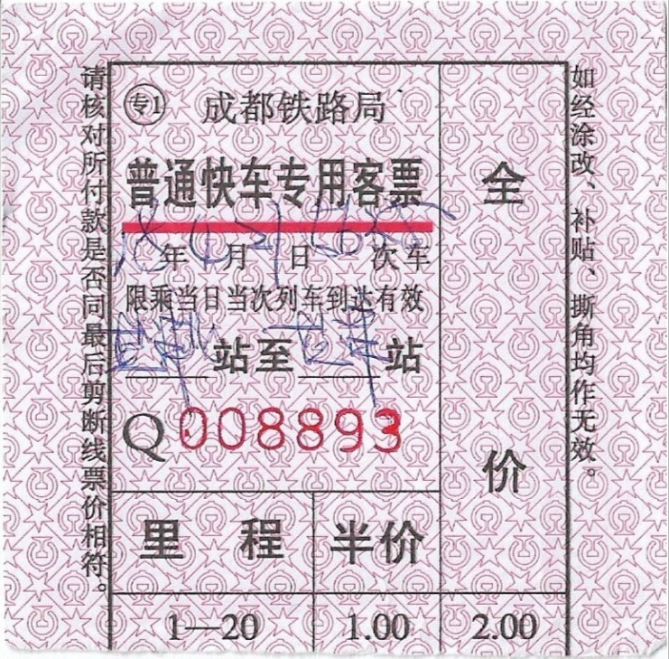
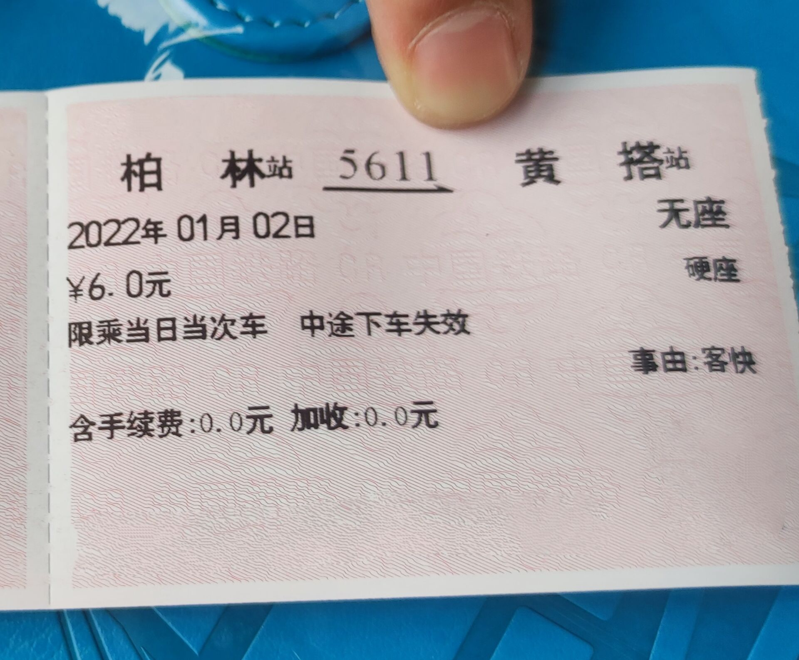
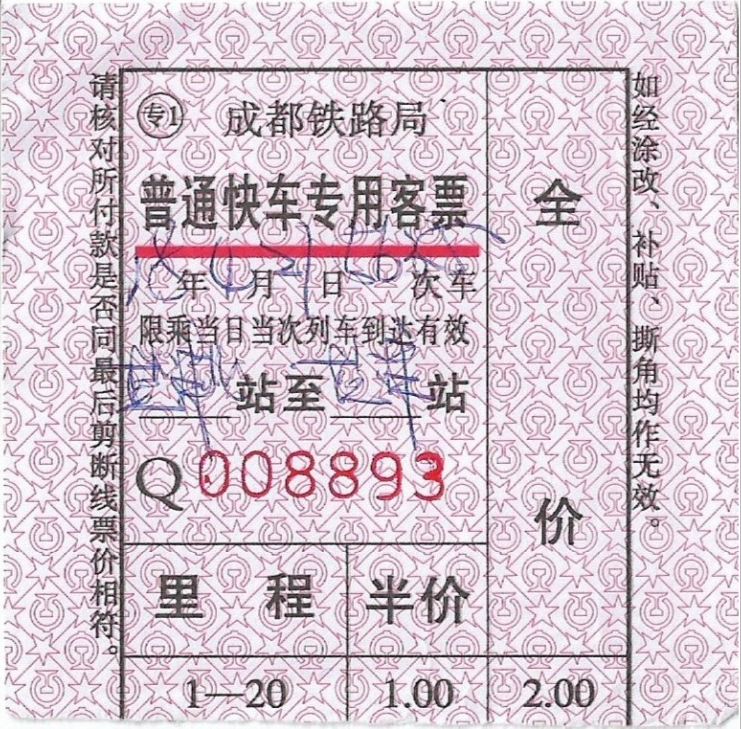
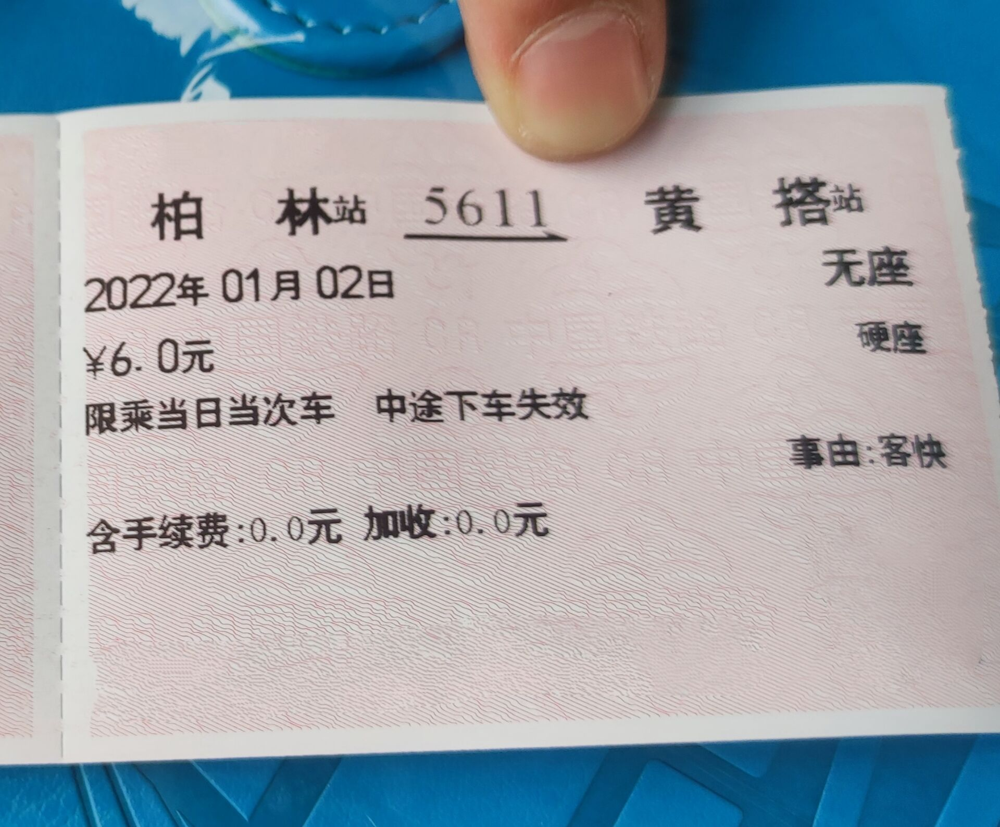

Different from tickets of Amtrak, CR has a very complex ticketing system. Normally, there are red tickets and blue tickets. Their functions are totally the same. It only depends on the ticketing machine. If you purchase a ticket on board, then you will recieve a small pink ticket. Apart from the common red, blue and pink tickets, there are some rarely seen kinds of tickets, including supplement ticket and interval ticket.
Direct Tickets
Direct tickets can be sold in all forms mentioned above, depending where the ticket is sold. Passengers can travel on a specific train with a specific seat only once with a direct ticket. After June 20th, 2020, most of the direct tickets are electrified. Passengers can board paperlessly with their ID card or passport. The previously called "ticket" turned to be reimbursement voucher.
Most of the tickets have name and ID number on it. To protect the privacy of ticket owners, all personal information is cleaned.
 



Pass Ticket
Pass ticket allows passengers to transfer different trains on a specific route in a couple of days. It is very rare nowadays. It can be sold in the form of rad, blue, and supplement ticket.